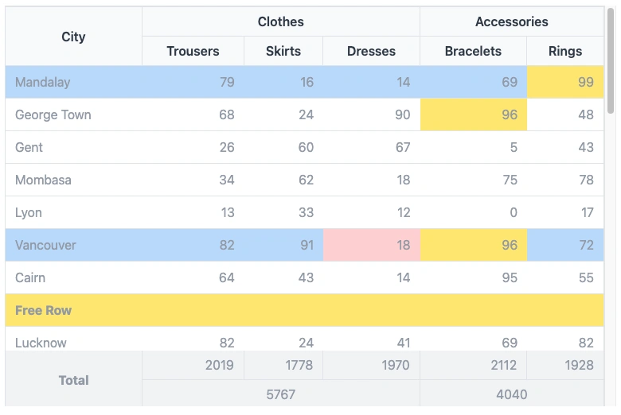

Simple Table
Simple Table is a lightweight component built upon FFTable, offering functionalities for creating complex table headers and footers with ease. Unlike FFTable, it doesn't include a built-in form for editing data, paging and sorting.

<f3:inject id="content">
<div x-data="data" class="max-w-screen-md">
<include href="blocks/simple-table.html" />
</div>
</f3:inject>
<f3:inject id="script" mode="append">
<script src="{{@BASE}}/js/fftable.min.js"></script>
<script src="{{@BASE}}/js/util.js"></script>
<script>
let data = {
table: {
fullWidth: true,
size: 'none',
display: 'compact',
containerClass: 'h-[60vh]',
rowClass(idx, row) {
return {
'whitespace-nowrap': true,
'bg-blue-200': idx % 5 == 0
};
},
cellClass(cidx, ridx, row, col) {
return {
'bg-red-200': ridx == 5 && cidx == 3,
'bg-yellow-200': row[col] > 95,
}
},
columns: [
{ name: 'city', },
{ name: 'trousers', class: 'text-right', },
{ name: 'skirts', class: 'text-right', },
{ name: 'dresses', class: 'text-right', },
{ name: 'bracelets', class: 'text-right', },
{ name: 'rings', class: 'text-right', },
],
customHeader: [
[
{ title: 'City', attr: { rowspan: 2 }, class: 'border-r border-t' },
{ title: 'Clothes', attr: { colspan: 3 }, class: 'border-r border-t' },
{ title: 'Accessories', attr: { colspan: 2 }, class: 'border-t' }
],
[
{ title: 'Trousers', class: 'border-r' },
{ title: 'Skirts', class: 'border-r' },
{ title: 'Dresses', class: 'border-r' },
{ title: 'Bracelets', class: 'border-r' },
{ title: 'Rings' },
]
],
data: [
{ "city": "Mandalay", "trousers": 79, "skirts": 16, "dresses": 14, "bracelets": 69, "rings": 99 },
{ "city": "Cairn", "trousers": 64, "skirts": 43, "dresses": 14, "bracelets": 95, "rings": 55 },
{ "__customRow": true, columns: [{ text: 'Free Row', attr: { colspan: 6 } }], class: 'bg-yellow-200 font-bold' },
...
{ "city": "Lucknow", "trousers": 82, "skirts": 24, "dresses": 41, "bracelets": 69, "rings": 82 },
{ "city": "Vigan", "trousers": 74, "skirts": 22, "dresses": 54, "bracelets": 61, "rings": 12 },
],
customFooter: [
[
{ value: 'Total', class: 'font-bold border-r text-center', attr: { rowspan: 2 } },
{ name: 'total-trousers', class: 'text-right border-r' },
{ name: 'total-skirts', class: 'text-right border-r', },
{ name: 'total-dresses', class: 'text-right border-r' },
{ name: 'total-bracelets', class: 'text-right border-r' },
{ name: 'total-rings', class: 'text-right' },
],
[
{ name: 'total-clothes', class: 'text-center border-r', attr: { colspan: 3 } },
{ name: 'total-accessories', class: 'text-center', attr: { colspan: 2 } },
],
],
footerData: {
}
}
};
['trousers', 'skirts', 'dresses', 'bracelets', 'rings'].forEach(e => {
data.table.footerData['total-' + e] = data.table.data.filter(e => !e.__customRow).map(f => f[e]).reduce((a, c) => a + c, 0);
});
data.table.footerData['total-clothes'] = data.table.footerData['total-trousers'] + data.table.footerData['total-skirts'] + data.table.footerData['total-dresses'];
data.table.footerData['total-accessories'] = data.table.footerData['total-bracelets'] + data.table.footerData['total-rings'];
</script>
</f3:inject>
Properties
fullWidthBoolean, to use full width of container or flow as content width
displaycompact|normal specify padding between cellscontainerClassclass for container
rowClassclass for row, can be a constant or a function that receive index and data as parameter.
cellClassclass for cell, can be a constant or a function that receive col index, row index, data and col
name as parameter.
customHeaderDefine non standard table header. If undefined, standard table header created from columns
definition.
columnsData Structure definition for Simple Table
datadata to be rendered. There is special row that has "__customRow" property where we can display
anything. Usually when we want to draw separator.
customFooterDefine complex footer
footerDatadata for customFooter
See demo here